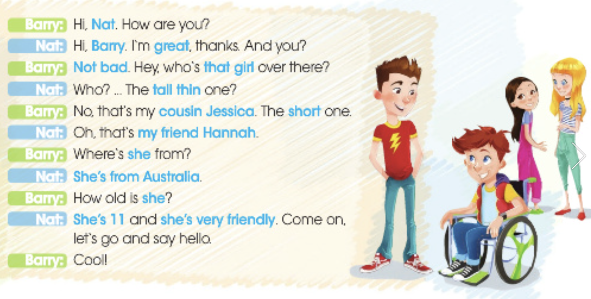

Język angielski
Unit 02
Lekcja 02 D - Describing a family member.
(Physical Appearance/Personality)
Описание члена семьи
🌟 Describing a family member.
Когда мы описываем кого-то из семьи, мы говорим о двух вещах:
- 1️⃣ Кто это? (family)
- 2️⃣ Как он выглядит? (appearance)
- 3️⃣ Какой он по характеру? (personality)
👨👩👧 Family (кто это)
- 🔊 my mother / mum — моя мама
- 🔊
my father / dad — мой папа
(mój ojciec) - 🔊 my sister — моя сестра (moja siostra)
- 🔊 my brother — мой брат (mój brat)
- 🔊 my grandmother / grandma — бабушка (moja bacia)
- 🔊 my grandfather / grandpa — дедушка (mój dziadek)
- 🔊 my cousin — двоюродный брат/сестра (mój kuzyn/kuzyna)
- 🔊 my aunt — тётя (moja ciocia/ciotka )
- 🔊 my uncle — дядя (mój wujek/wujka)
👀 Physical appearance
(внешность)
- 🔊 He is tall. — Он высокий.(On jest wysoki.)
- 🔊 She is short. — Она низкая.(Ona jest krótka.)
- 🔊
She/He has got long/short hair.
У неё/него длинные/короткие волосы.
(Ona/On ma długie/krótkie włosy.) - She/He has got blue/green/brown eyes.
Глаза голубые/зелёные/карие. - She/He has got curly/straight hair.
Кудрявые/прямые волосы.
💛 Personality (характер)
- 🔊 He is kind. — Он добрый. (On jest miłym.)
- 🔊 — She is funny. — Она смешная. (Ona jest zabawna.)
- 🔊 He is friendly. — Дружелюбный (On jest przyjazny.)
- She is smart. — Умная.
- She/He is shy. — Скромный(ая).
- She/He is helpful. — Готов(а) помочь.
🧩 Полезные фразы для описания
- This is my … — Это моя/мой …
- She/He is … years old. — Ей/ему … лет.
- She/He looks … — Она/Он выглядит …
- She/He has got … — У неё/него есть …
- She/He is … — Она/Он … (по характеру)
✨ Готовый пример описания
My sister
This is my sister. Her name is Anna.
She is ten years old.
She has got long brown hair and green eyes.
She is tall and very pretty.
She is kind, funny and friendly. I love my sister.

Опиши кого-то из своей семьи по этому шаблону:
1. Who is it?
2. Age
3. Appearance
4. Personality
5. 1–2 предложения о том, почему ты его/её любишь